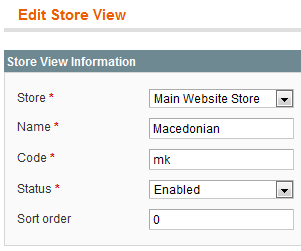
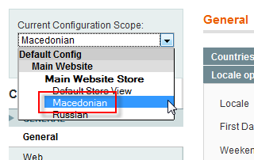
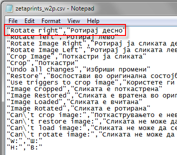
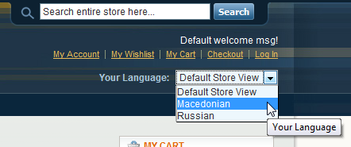

<?xml version="1.0" encoding="UTF-8"?><rss version="2.0"
	xmlns:content="http://purl.org/rss/1.0/modules/content/"
	xmlns:wfw="http://wellformedweb.org/CommentAPI/"
	xmlns:dc="http://purl.org/dc/elements/1.1/"
	xmlns:atom="http://www.w3.org/2005/Atom"
	xmlns:sy="http://purl.org/rss/1.0/modules/syndication/"
	xmlns:slash="http://purl.org/rss/1.0/modules/slash/"
	>

<channel>
	<title>magento extension &#8211; Magento web-to-print &amp; dynamic imaging</title>
	<atom:link href="http://www.zetaprints.com/magentohelp/tag/magento-extension/feed/" rel="self" type="application/rss+xml" />
	<link>http://www.zetaprints.com/magentohelp</link>
	<description>Just another WordPress site</description>
	<lastBuildDate>Fri, 07 Jun 2013 06:55:21 +0000</lastBuildDate>
	<language>en-US</language>
	<sy:updatePeriod>hourly</sy:updatePeriod>
	<sy:updateFrequency>1</sy:updateFrequency>
	<generator>https://wordpress.org/?v=4.4.1</generator>
	<item>
		<title>Translations</title>
		<link>http://www.zetaprints.com/magentohelp/magento-web-to-print-localization/</link>
		<pubDate>Tue, 16 Mar 2010 09:42:33 +0000</pubDate>
		<dc:creator><![CDATA[admin]]></dc:creator>
				<category><![CDATA[Web-to-print administration]]></category>
		<category><![CDATA[Customization]]></category>
		<category><![CDATA[magento extension]]></category>
		<category><![CDATA[Translate]]></category>
		<category><![CDATA[Translation]]></category>

		<guid isPermaLink="false">/help/?p=9099</guid>
		<description><![CDATA[You can customize your web-to-print Magento store with additional language options. Users will be able to choose the language they prefer from a list of translations you provide. This post explains how to create a localized version of our web-to-print Magento store and give customers the option of viewing it in their own language (ex. [&#8230;]]]></description>
				<content:encoded><![CDATA[<p>You can customize your web-to-print Magento store with additional language options. Users will be able to choose the language they prefer from a list of translations you provide.<span id="more-9099"></span></p>
<p>This post explains how to create a localized version of our web-to-print Magento store and give customers the option of viewing it in their own language (ex. Macedonian). You need to perform the following steps:</p>
<ol>
<li>create a new store view</li>
<li>create a new locale</li>
<li>save the locale</li>
<li>download the locale files</li>
<li>translate the contents of the files</li>
<li>upload</li>
<li>re-index data</li>
</ol>
<h2>Create additional store view</h2>
<p>Navigate to <em>System/Manage</em> store in your Magento administration panel and click on <strong>Create Store View</strong> button in the top right corner.</p>
<div style="display: table;">
<p></p>
<div style="position: relative; top: 15px; display: inline;">
<ol>
<li>Chose a store that you wish the additional store view applied to;</li>
<li>Input the name (language) for the custom store view. This is what users will see in the list of languages.</li>
<li>Input the code for the new language;</li>
<li>Enable the store view;</li>
<li>Click <strong>Save Store View</strong> in the top right corner.</li>
</ol>
</div>
</div>
<h2>Locale options</h2>
<div style="display: table;">
<p></p>
<div style="position: relative; top: 15px; display: inline;">Navigate to <em>System/Configuration</em> and chose your newly created store view from the <strong>Current Configuration Scope</strong> drop-down menu.</div>
</div>
<div style="display: table;">
<p></p>
<div style="position: relative; top: 15px; display: inline;">
<p>In the <strong>General</strong> tab of the configuration page, set the new language in the <strong>Locale</strong> field and click <strong>Save Config</strong>.</p>
<p>You have now created a new, localized store view for your Magento web-to-print store.</p>
</div>
</div>
<h2>Translate your store</h2>
<p>The most important part of the localization is translating the text. This is a simple procedure that requires editing a CSV file with a simple text editor. You can edit existing CSV files found in our <a title="Template web-to-print locale CSV file" href="http://code.google.com/p/magento-w2p/source/browse/trunk/app/locale/#locale" target="_self">SVN repository</a>.</p>
<p>Download the CSV file and open it with a text editing application (<em>Notepad</em>, <em><a title="Free Notepad++ download" href="http://notepad-plus.sourceforge.net/uk/download.php" target="_self">Notepad++</a></em> etc.).</p>
<h3>Built in locales</h3>
<p>Our <a title="Web-to-print extension for Magento" href="https://www.magentocommerce.com/magento-connect/web-to-print-and-dynamic-imaging.html">web-to-print extension</a> for Magento comes built-in with the following locales:</p>
<ul>
<li>EN &#8211; English</li>
<li>RU &#8211; Russian</li>
<li>MK &#8211; Macedonian</li>
<li>BG &#8211; Bulgarian (incomplete)</li>
<li>DE &#8211; German (incomplete)</li>
<li>ES &#8211; Spanish (incomplete)</li>
</ul>
<p>Each button, link, text that appeared in your store after installing the <a title="Magento web-to-print extension" href="../../../magento/" target="_self">Magento web-to-print extension</a> is represented as a separate line inside the CSV file in the following format:</p>
<div class="codecolorer-container xml mac-classic" style="overflow:auto;white-space:nowrap;border:1px solid #9F9F9F;width:435px;"><table cellspacing="0" cellpadding="0"><tbody><tr><td style="padding:5px;text-align:center;color:#888888;background-color:#EEEEEE;border-right: 1px solid #9F9F9F;font: normal 12px/1.4em Monaco, Lucida Console, monospace;"><div>1<br /></div></td><td><div class="xml codecolorer" style="padding:5px;font:normal 12px/1.4em Monaco, Lucida Console, monospace;white-space:nowrap">“In English”,”In other language”</div></td></tr></tbody></table></div>
<div style="display: table;">
<p></p>
<div style="position: relative; top: 15px; display: inline;">
<p>Your job is to change the content inside the second set of &#8220;quotation marks&#8221; in your language for each line.</p>
<p>Translated strings cannot contain &#8220;double &#8220;quotes&#8221;&#8221;.</p>
</div>
</div>
<p><strong>Note.</strong> Save the file without changing its extension! The file name should be <span style="color: #ff0000;"><strong>ZetaPrints_WebToPrint.csv</strong></span></p>
<h3>Upload the CSV file</h3>
<p>Place the new CSV file in a folder named according to the short language code.</p>
<p>Example:</p>
<ul>
<li>Russian: ru_RU</li>
<li>German: de_DE</li>
<li>Macedonian: mk_MK</li>
</ul>
<div style="display: table;">
<p></p>
<div style="position: relative; top: 15px; display: inline;">Upload the folder in your hosting account to the following destination:<br />
<strong>Magento store folder</strong> -&gt; <strong>app</strong> -&gt; <strong>locale</strong></div>
</div>
<h2>Web-to-print label translation</h2>
<p><a title="Magento web-to-print label translation" href="../../../label-translations/" target="_self">Label translation</a> (<em>titles of pages, titles of text and image fields, hints and predefined values in templates</em>) is done separately from <a title="Magento web-to-print extension" href="https://www.magentocommerce.com/magento-connect/web-to-print-and-dynamic-imaging.html" target="_self">web-to-print extension</a> interface translation that&#8217;s explained here.</p>
<h2>Reindex data</h2>
<p>Navigate to System/Index management in your Magento admin panel and run data re-index for all required indexes.</p>
<div style="display: table;">
<p></p>
<div style="position: relative; top: 15px; display: inline;">The new language options will appear in a form of a drop-down menu in the header of your web-to-print Magento store.</div>
</div>
]]></content:encoded>
			</item>
		<item>
		<title>Access control extension</title>
		<link>http://www.zetaprints.com/magentohelp/magento-access-control-for-dynamic-imaging/</link>
		<pubDate>Tue, 02 Feb 2010 15:51:20 +0000</pubDate>
		<dc:creator><![CDATA[admin]]></dc:creator>
				<category><![CDATA[Access control plugin]]></category>
		<category><![CDATA[Dynamic imaging]]></category>
		<category><![CDATA[magento extension]]></category>

		<guid isPermaLink="false">/help/?p=8883</guid>
		<description><![CDATA[Magento is an open source e-commerce platform platform. We developed an open source extension for Magento access control to complement our web-to-print extension that allows you to incorporate your web-to-print and dynamic imaging templates in your Magento store. Our free extension The access control extension comes in handy when you want to hide certain products [&#8230;]]]></description>
				<content:encoded><![CDATA[<p><a title="Magento ecommerce platform" href="http://www.magentocommerce.com/" target="_self">Magento</a> is an open source e-commerce platform platform. We developed an <a title="magento access control source code" href="http://code.google.com/p/magento-w2p/source/browse/#svn/branches/ZetaPrints_AccessControl">open source</a> extension for <a title="Password protected categories" href="https://www.magentocommerce.com/magento-connect/category-access-control.html">Magento access control</a> to complement our <a title="Web-to-print ZetaPrints extension for Magento" href="https://www.magentocommerce.com/magento-connect/web-to-print-and-dynamic-imaging.html" target="_self">web-to-print extension</a> that allows you to incorporate your web-to-print and dynamic imaging <a title="Web-to-print templates" href="../../printers/web-to-print-templates/" target="_self">templates</a> in your Magento store.<span id="more-8883"></span></p>
<h3>Our free extension</h3>
<p>The <a title="Password protected categories" href="https://www.magentocommerce.com/magento-connect/category-access-control.html">access control extension</a> comes in handy when you want to hide certain products (templates) from the general public or give access to certain products only to certain customers. For example, if you are running a print store for corporate customers and they all have their access limited to their own branded products and categories.</p>
<h3>Mageparts paid alternative</h3>
<p><strong></strong>As an alternative solution, you may also try MageParts&#8217; <a title="Restrict Categories access control extension for Magento" href="http://www.magentocommerce.com/magento-connect/restrict-categories.html">Restrict Categories</a> extension for Magento. It was tested compatible with our <a title="Web-to-print ZetaPrints extension for Magento" href="https://www.magentocommerce.com/magento-connect/web-to-print-and-dynamic-imaging.html" target="_self">web-to-print extension</a> and they offer free support and bug fixes.</p>
<h2>Installation</h2>
<p>Your Magento website can <a title="Category access control for Magento" href="https://www.magentocommerce.com/magento-connect/category-access-control.html" target="_self">install the extension</a> automatically if you provide the right key.</p>
<p></p>
<p>Open Magento Connect Manager (<em>System/Configuration/Magento Connect Manager</em>), paste the extension key and hit <strong>Install</strong>.</p>
<p>We recommend installing the latest stable release. Beta versions may have unresolved issues or experimental features.</p>
<h2>Group creation</h2>
<p>Access control is managed per user group. The extension comes with several pre-defined groups for registered and unregistered users. You need to create user groups to assign individual users to them.</p>
<p>There are 3 pre-defined access groups in the extension:</p>
<ul>
<li><strong>NONE</strong> &#8211; Category products are not visible to any customer</li>
<li><strong>ALL</strong> &#8211; Category products are visible to all customers</li>
<li><strong>REGISTERED</strong> &#8211; Category products are visible only to registered customers</li>
</ul>
<p>To create additional user groups, go to <em>Customers/Customer groups</em> page in Magento admin and click on <strong>Add New Customer Group</strong> button in the top right corner.</p>
<p></p>
<p>Input the <em>Group Name</em>, chose the <em>Tax class</em> from the drop-down menu and click <strong>Save Customer Group</strong>.</p>
<p></p>
<h2>Assigning users to groups</h2>
<p>You can assign users to groups individually.</p>
<div style="display: table;">
<p></p>
<div style="position: relative; top: 15px; display: inline;">Go to <em>Customers/Manage Customers</em> page in Magento admin.</div>
</div>
<p>Check the box next to the customer name(s), select<strong> Assign a customer group</strong> from the <em>Actions</em> drop-down menu and the group from the <em>Group</em> drop-down menu and click <strong>Submit</strong>.</p>
<p></p>
<p>The customer(s) is now added to the access group and has access to products that are in a category that has the access group assigned to it.</p>
<h2>Configuring individual categories</h2>
<div style="display: table;">
<p></p>
<div style="position: relative; top: 15px; display: inline;">To assign an access group to a category of products in your store, go to <em>Catalog/Manage Categories</em>.</div>
</div>
<p>Select the category and assign an access group (<em>hold <strong>Ctrl</strong> to select multiple groups</em>) in the <strong>Show to customer groups</strong> section of the <strong>General Information</strong> tab and click on <strong>Save Category</strong>.</p>
<p></p>
<p>Any user belonging to any of the access group(s) you selected will be able to see and order the products from that category.</p>
<h2>Products in multiple categories</h2>
<p>Some products may belong to multiple categories. Access if any of the categories is available to the user.</p>
<p>For example, one of product&#8217;s categories is available to general public, so anyone can see the product regardless of the other categories.</p>
<h2>Default configuration</h2>
<p>There is one store-wide default configuration. It can be configured in <strong>Custom Groups Access Control</strong> section on <em>System/Configuration/Catalog</em> page in Magento admin. Changes to the default settings affect all categories with USE DEFAULT setting selected. It is also the initial access control setting for new categories.</p>
<p></p>
<h2>Links</h2>
<ul>
<li><a title="Access control extension overview" href="../../../../magento-web-to-print/magento-access-control/" target="_self">Extension overview</a></li>
<li><a title="Access control extension source code" href="http://code.google.com/p/magento-w2p/source/browse/#svn/branches/ZetaPrints_AccessControl" target="_self">Source code</a></li>
<li><a title="Access control extension issue list" href="http://code.google.com/p/magento-w2p/issues/list" target="_self">Issues</a></li>
</ul>
]]></content:encoded>
			</item>
	</channel>
</rss>

<!-- Localized -->